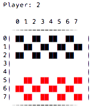

A work-in-progress checkers opponent I’m making for my computer science class.
Effectively, this program is designed to analyze a situation within the game of checkers and calculate the optimal decisions to make.
I am using python3 and a text-based terminal interface, though I plan to make a curses GUI in the future.
There really is none. It’s still in development and I’m not going to set something like that up until I reach a certain stage in production. To test, just download or clone the repository.
To use checkers, cd into the folder containing the script and run:
python3 checkers.py
You should see something like this:

Me! (so lonely…)